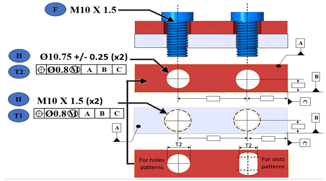
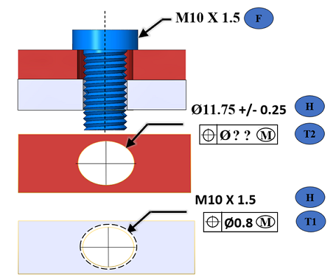
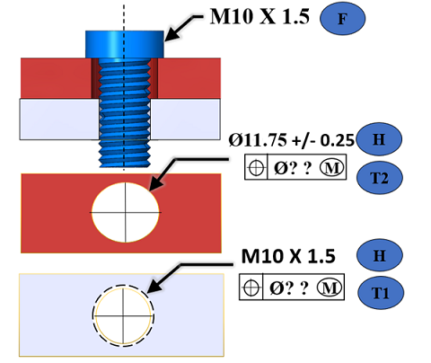
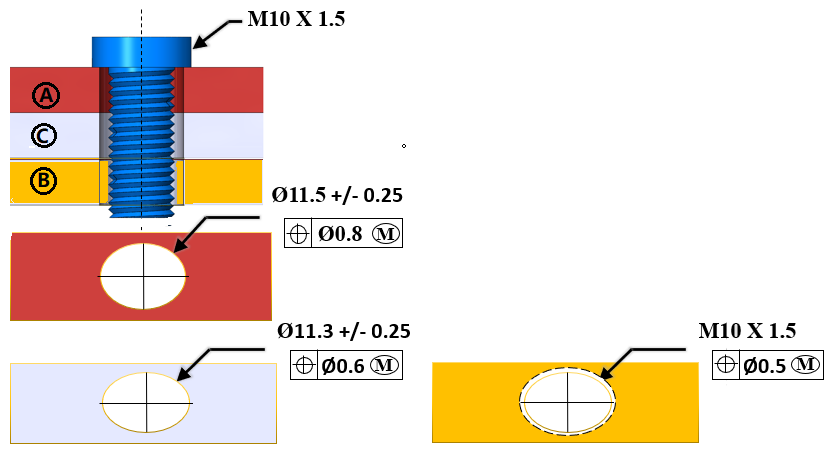
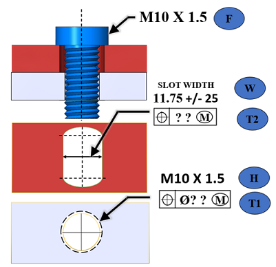
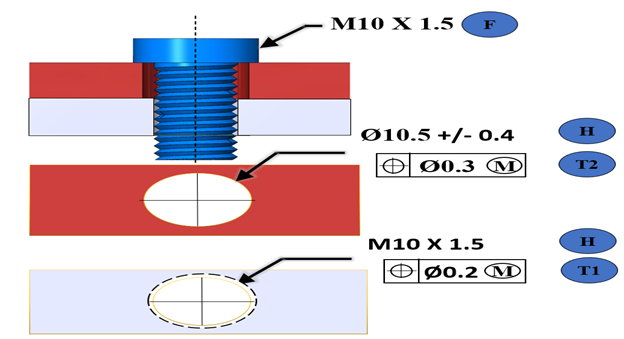
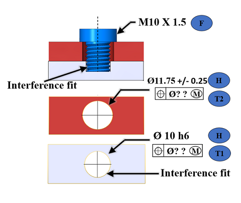
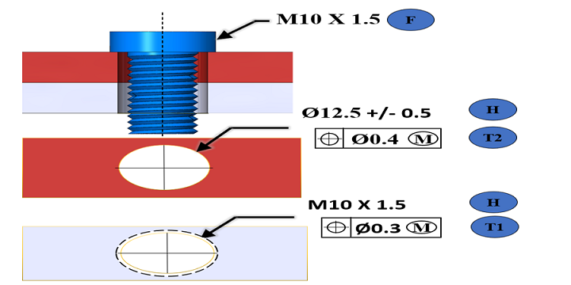
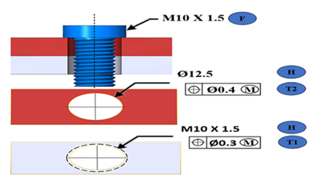
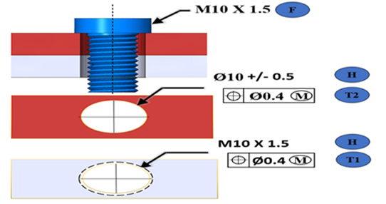

本ルールは、3D PMI の公差データを確認し、最小クリアランス穴径（F "留め具径" と T "穴の最大位置公差" に変更がないものとして考慮）をチェックします。
同様に、本ルールは穴の最大位置公差（F "留め具径" と H "クリアランス穴の最小径" に変更がないものとして考慮）をチェックします。
クリアランス穴径（MMC）が留め具径（MMC）より小さい場合、基本的な組立条件が満たされていないため、本ルールはアラートとしてフラグを立てます。
※MMC（Maximum Material Condition：最大実体状態）とは、部品が最も材料を多く含む状態を示し、穴では最小径、留め具では最大径を指します。
位置拘束留め具組立では、上側プレートにクリアランス穴があり、下側プレートにねじ穴があります。
位置拘束留め具の計算式は、組立を確実にするために必要な適切な最小クリアランス穴サイズ、または最大位置公差を算出するために使用できます。
この計算式は、フィーチャが MMC の状態にあり、かつ位置公差が極端な場合でも「干渉ゼロ」のはめあいを提供します。
ねじ／ボルトの長さが胴径の 8 倍を超える場合、本ルールは留め具の真直度偏差を考慮します。
ボルト長が長いと、同軸度が短時間で崩れやすくなります。
このケースでは、留め具偏差が留め具データベース（MMC）に追加されます。
ねじの長さが ねじ径の 8 倍を超える場合は、真直度偏差公差を考慮します。
L <= 305 mmの場合
FD = F + L x 0.006
L > 305 mmの場合
FD = F + L x 0.008
F = 留め具最大径（MMC）
L = 留め具長さ
FD = 偏差を含む留め具径（包絡径）
すべての値（F、H、T）が CAD ファイル内の PMI データとして利用可能な場合、最小クリアランス穴径（F と T に変更がないものとして考慮）に対する推奨値が提供されます。
本ルールは、穴の最大位置公差（F と H に変更がないものとして考慮）をチェックします。
例：
T1 = T2 = T かつ H1 = H2
位置拘束留め具の計算式： H = F + 2T
|
 |
位置公差が等しい場合に使用される一般式 H = F + 2T または T = (H - F)/2
ここで、 H = クリアランス穴の最小径 F = 留め具の最大径 T = クリアランス穴に対する最大位置公差径
H = F + 2T
H = 10.00 + 2(0.8) H = Ø 11.60 mm |
クリアランス側の位置公差値（T2）が欠落している場合、本ルールは T1#T2 の条件として扱い、位置拘束留め具式 H = F + T1 + T2 を用いて値を計算します。
例：
クリアランス穴の位置公差が欠落しており、F と H の値が利用可能な場合。
T1#T2
位置拘束留め具の計算式： H = F + T1 + T2

推奨インスタンス：
留め具の最大径-MMC（F）= 10.0 mm
クリアランス穴の最小径-MMC（H）= 11.5 mm
ねじ穴の最大位置公差（T1）= 0.8 mm
クリアランス穴の最大位置公差（T2）= ??
クリアランス穴の最大位置公差：T2 = H – F - T1
実際値（T2）= 値が欠落
推奨値（T2）<= 0.7 mm（F、H、T1 の値を変更しない場合）
クリアランス穴とねじ穴の両方の位置公差が欠落している場合、本ルールは T1 = T2 = T の条件として扱い、位置拘束留め具の式 H = F + 2T を用いて値を計算します。

推奨インスタンス：
留め具の最大径-MMC（F）= 10.0 mm
クリアランス穴の最小径-MMC（H）= 11.5 mm
ねじ穴の最大位置公差（T）= ??
両穴に対する最大位置公差：T = ½（H – F）
実際値（T）= 値が欠落
推奨値（T）<= 0.75 mm（F と H の値を変更しない場合）
2 枚を超えるプレート組立の場合。
例：
H1#H2 および T1#T2
位置拘束留め具の計算式： H = F + T1 + T2
留め具、クリアランス穴、ねじ穴の間で個別に検証します。
|
 |
2 枚を超えるプレートがあり、クリアランス穴径と位置公差が異なる場合は？ 以下の間で個別に検証します
|
推奨インスタンス 1：（プレート A & B）
留め具最大径-MMC（F）= 10.0 mm
クリアランス穴の最小径-MMC（H）= 11.25 mm
ねじ穴の最大位置公差（T1）= 0.5 mm
クリアランス穴の最大位置公差（T2）= 0.8 mm
クリアランス穴の最小径：H = F + T1 + T2
実際値（H）= 11.25 mm
推奨値（H）>= 11.3 mm（F と T の値を変更しない場合）
クリアランス穴の最大位置公差：T2 = H – F - T1
実際値（T2）= 0.8 mm
推奨値（T2）<= 0.75 mm（F と H の値を変更しない場合）
ねじ穴の最大位置公差：T1 = H – F - T2
実際値（T1）= 0.5 mm
推奨値（T1）<= 0.45 mm（F と H の値を変更しない場合）
推奨インスタンス 2：（プレート A & C）
留め具最大径-MMC（F）= 10.0 mm
クリアランス穴の最小径-MMC（H）= 11.05 mm
ねじ穴の最大位置公差（T1）= 0.5 mm
クリアランス穴の最大位置公差（T2）= 0.6 mm
クリアランス穴の最小径：H = F + T1 + T2
実際値（H）= 11.05 mm
推奨値（H）>= 11.1 mm（F と T の値を変更しない場合）
クリアランス穴の最大位置公差：T2 = H – F - T1
実際値（T2）= 0.6 mm
推奨値（T2）<= 0.55 mm（F と H の値を変更しない場合）
ねじ穴の最大位置公差：T1 = H – F - T2
実際値（T1）= 0.5 mm
推奨値（T1）<= 0.45 mm（F と H の値を変更しない場合）
クリアランス穴の代わりにスロットが存在し、スロット幅に対する位置公差が利用可能な場合。
H = スロット幅
T = スロット幅に対する位置公差
T1 = T2 = T かつ H1 = H2
位置拘束留め具の計算式： H = F + 2T
例：
スロット幅とねじ穴の両方の位置公差が欠落していると仮定します。その場合、本ルールは T1 = T2 = T の条件として扱い、位置拘束留め具の計算式 H = F + 2T を用いて値を計算します。

推奨インスタンス：
留め具最大径-MMC（F）= 10.0 mm
クリアランススロット幅の最小値-MMC（H）= 11.5 mm
ねじ穴の最大位置公差：T = ½（H – F）
実際値（T）= 値が欠落
推奨値（T）<= 0.75 mm（F と H の値を変更しない場合）
位置公差の公差値が負（-ve）の場合、本ルールは条件（T1 + T2 = H - F）をチェックします。

推奨インスタンス：
留め具最大径-MMC（F）= 10.0 mm
クリアランス穴の最小径-MMC（H）= 10.1 mm
クリアランス穴の最大位置公差（T2）= 0.3 mm
ねじ穴の最大位置公差（T1）= 0.2 mm
クリアランス穴の最小径：H = = F + T1 + T2
実際値（H）= 10.1 mm
推奨値（H）>= 10.5 mm（F、T1、T2 の値を変更しない場合）
必要最大値：T1 + T2 = H - F
実際値（T1 + T2）= 0.5 mm
推奨値（T1 + T2）<= 0.1 mm（F と H の値を変更しない場合）
圧入組立のケースで、留め具が下側の穴と干渉している場合、本ルールは位置拘束留め具組立として扱い、位置拘束留め具の計算式に対して検証しました。
以下のケースでは、最大位置公差の両方が欠落しているため、本ルールは T1 = T2 = T の条件として扱い、位置拘束留め具の計算式 H = F + 2T を用いて値を計算します。

推奨インスタンス：
留め具最大径-MMC（F）= 10.0 mm
クリアランス穴の最小径-MMC（H）= 11.5 mm
ねじ穴の最大位置公差（T1）= ??
クリアランス穴の最大位置公差（T2）= ??
両穴に対する最大位置公差：T = ½（H – F）
実際値（T）= 値が欠落
推奨値（T）<= 0.75 mm（F と H の値を変更しない場合）
以下の条件が満たされる場合、本ルールは合格となります：
実際のクリアランス穴径-MMC（H）が、推奨値より大きい場合。
穴の位置公差（T）の最大値が、推奨値より小さい場合。

上記の例では—
12 mm >= 10.7 mm
0.3 mm <= 1.6 mm
0.3 mm <= 1.7 mm
穴に PMI が追加されているが、直径寸法の直径公差値が欠落している場合。
留め具最大径-MMC（F）= 10.0 mm
クリアランス穴の最小径-MMC（H）= 12.5 mm
クリアランス穴の直径公差値が欠落しています。

クリアランス穴径（MMC）が留め具径（MMC）より小さい場合、組立条件を満たさないため、アラートとしてフラグが立てられます。
留め具最大径-MMC（F）= 10.0 mm
クリアランス穴の最小径-MMC（H）= 9.5 mm
クリアランス穴径（MMC）が留め具径（MMC）より小さいため、組立条件が満たされていません。

注記:
このルールは、トップレベルのアセンブリ部品で、DFMPro 設定に基づいて実行できます。
チェックを正常に実行するためには、アセンブリ内のボルト、ワッシャなどを識別するために、以下の前提条件が必要です。